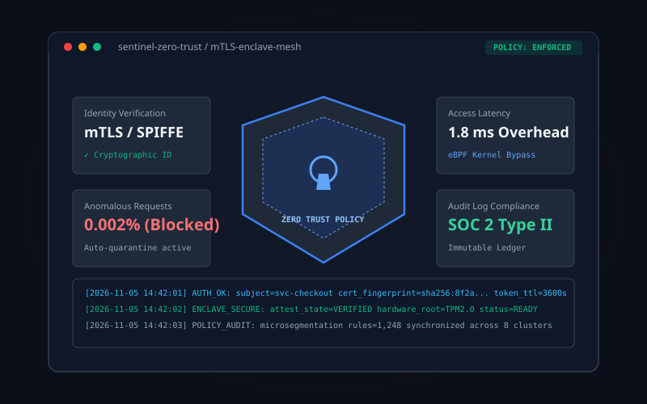
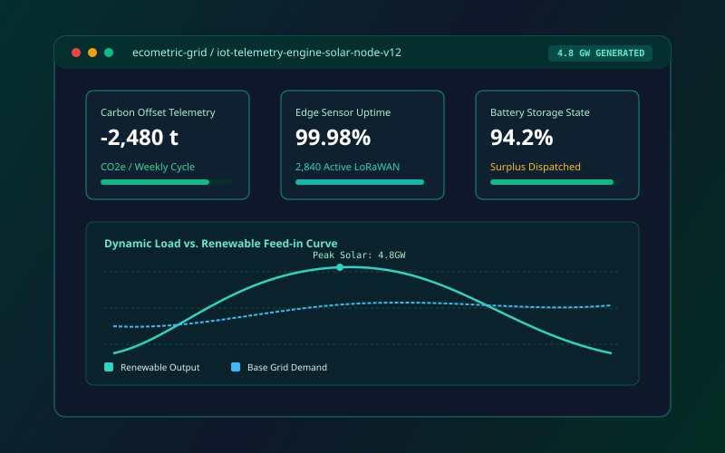
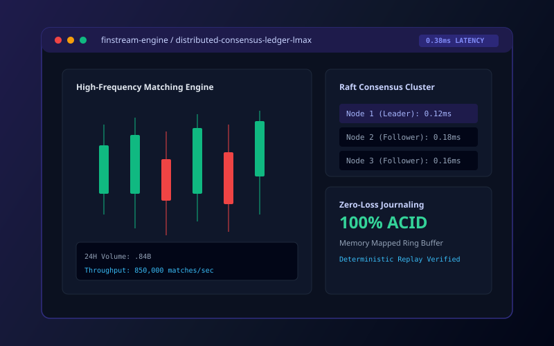
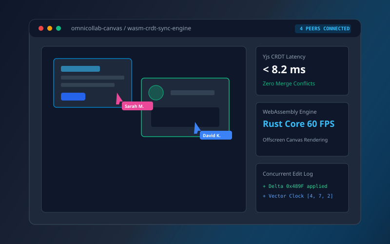

Cohort 2027 Track
Cloud Infrastructure & Distributed Systems
Design high-availability cloud-native microservices, custom Kubernetes controllers, service mesh routing, and automated infrastructure as code.
Core Technologies
The Nexis Fellowship embeds high-potential software engineers, data scientists, and systems researchers into cross-functional production pods to build resilient infrastructure, scalable AI pipelines, and zero-trust security ecosystems.
Founded by veteran principal engineers and distributed systems researchers, the Nexis Fellowship was established to eradicate the divide between textbook software engineering and mission-critical production systems.
During the 12-week program, fellows do not write throwaway prototypes or synthetic homework assignments. Instead, each intern is assigned to a specialized pod operating within genuine continuous deployment environments, submitting pull requests to distributed architectures, handling live failovers, and defending technical RFCs.
The Nexis Fellowship was the defining bridge in my career. Within four weeks, I went from university theory to debugging eBPF kernel sockets and deploying an autoscaling controller serving half a million requests a minute.
To cultivate world-class software engineers through direct immersion in distributed architectures, fostering technical precision, intellectual curiosity, and uncompromising craft.
To establish the global benchmark for technical apprenticeships, where emerging talent transitions seamlessly into high-autonomy roles shaping the infrastructure of tomorrow.
Deliver production-hardened deliverables, instill industry-standard automated testing and telemetry, and elevate communication through architectural design documents and peer reviews.
Deep-dive into team codebases, production access provisioning, CI/CD toolchains, and internal design RFC approvals.
Agile development cycles with daily standups, architectural whiteboarding, and continuous integration of capstone features.
Chaos testing, load benchmarking, security audits, eBPF telemetry tuning, and latency optimization under stress.
Presentation to industry executives, open-source releases, technical documentation publishing, and full-time hiring placement.
Fellows specialize within a targeted technical vertical while collaborating closely in cross-functional pods to mimic enterprise software engineering organizations.
Design high-availability cloud-native microservices, custom Kubernetes controllers, service mesh routing, and automated infrastructure as code.
Train, quantize, and serve production-scale models, low-latency vision transformers, retrieval-augmented generation pipelines, and MLOps platforms.
Build resilient, accessible, and high-performance interactive interfaces, WebRTC streaming suites, and collaborative CRDT-synchronized canvases.
Implement cryptographic token rotation with SPIFFE/SPIRE, eBPF behavioral anomaly defenses, hardware-enclave attestation, and SOC 2 audits.
Engineer high-throughput message brokers, event-driven streaming topologies, modern Lakehouse architectures, and sub-second analytical models.
Construct lock-free memory ring buffers, custom network socket abstractions with epoll/io_uring, and SIMD-accelerated financial matching engines.
Explore authentic capstone deliverables built by previous cohorts. Each project features measurable benchmarks, architecture RFCs, and open-source contributions.
 AI & Vision
AI & Vision
A high-throughput DICOM triage microservice performing real-time lung nodule detection using vision transformers quantized with TensorRT.
 Cloud & Systems
Cloud & Systems
An eBPF-driven Kubernetes custom controller analyzing socket queue depth to trigger proactive pod scaling ahead of traffic spikes.

Zero-TrustHardware-rooted zero-trust proxy enforcing automated SPIFFE certificate rotation and real-time behavioral API anomaly mitigation.

Data & IoTDistributed edge telemetry broker tracking 2,800+ solar micro-inverters with predictive battery dispatch algorithms.

Systems HPCA lock-free circular ring buffer matching engine with deterministic Raft consensus state machine and zero heap allocations.

Enterprise WebReal-time architectural diagramming suite with Rust WebAssembly CRDT synchronization, offscreen workers, and peer-to-peer WebRTC.
Fellows work shoulder-to-shoulder with Staff and Principal engineers who have designed infrastructure at scale for top global technology corporations.
Specializes in large-scale transformer quantization, sparse attention kernels, and distributed GPU cluster scheduling.
Author of enterprise service mesh controllers, eBPF network telemetry engines, and high-frequency autoscalers.
Pioneers cryptographic identity delegation, confidential computing enclaves, and zero-trust protocol verification.
“Nexis is fundamentally different from typical corporate internships. You aren’t handed a sandbox to play in; you are treated as a true peer. The feedback on my RFCs was more thorough than my master’s thesis defense.”
“The 1:3 mentor ratio is genuine. Every Friday, our Staff mentor walked through our telemetry traces, showing us how memory fragmentation was causing tail latency spikes in our Go service. Invaluable education.”
“The transition from university to senior engineering was compressed into 12 weeks. When I interviewed for full-time staff roles, discussing our eBPF and CRDT capstone gave me an unmatched competitive edge.”
Applications are evaluated on a rolling basis. Submit your dossier or send general program inquiries directly to our academic admissions board.
Undergraduate and graduate students, recent alumni (within 24 months of graduation), and self-taught software engineers with demonstrated code proficiency are eligible. International fellows requiring J-1 sponsorship receive full immigration assistance.
Yes, all fellows receive a competitive compensation package of $9,000 USD/month, high-tier workstation hardware (M3 Max / Linux workstation), and relocation/housing assistance for the 12-week on-site period.
Our process consists of three stages: 1) Initial application and code portfolio screening; 2) A 60-minute collaborative systems design & coding pairing session; 3) A 45-minute architectural interview with your prospective track mentor.
Over 88% of fellows receive return offers for full-time Software Engineer positions at Nexis, and 98.4% secure full-time engineering placements across our consortium within 60 days of graduation.
Complete all required fields below. All submissions receive written evaluation within five business days.